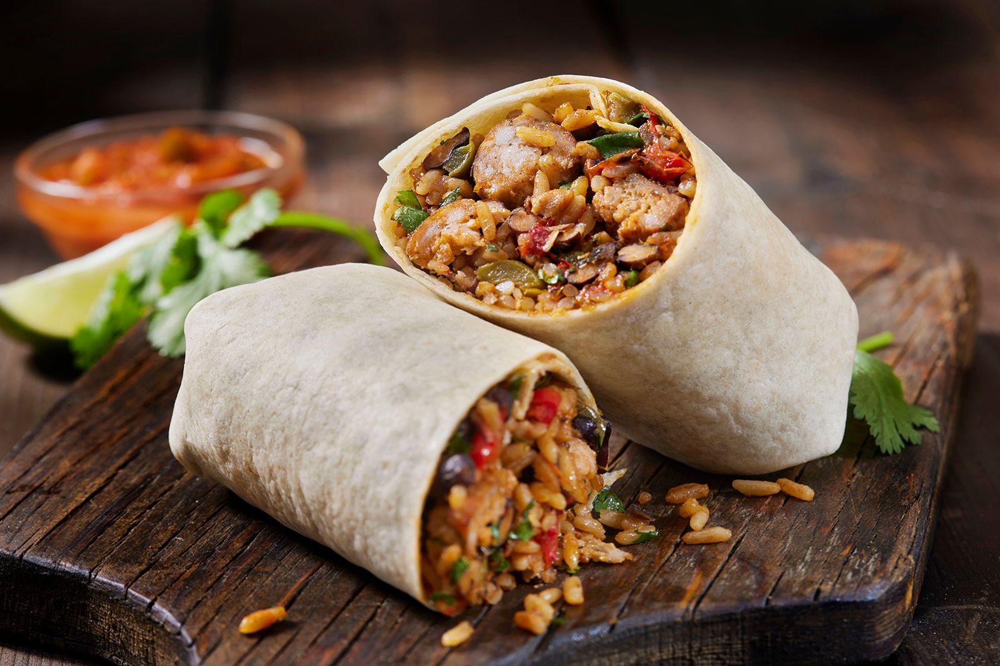
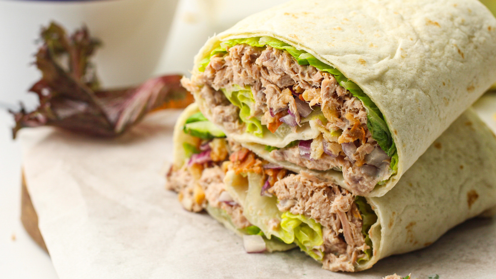
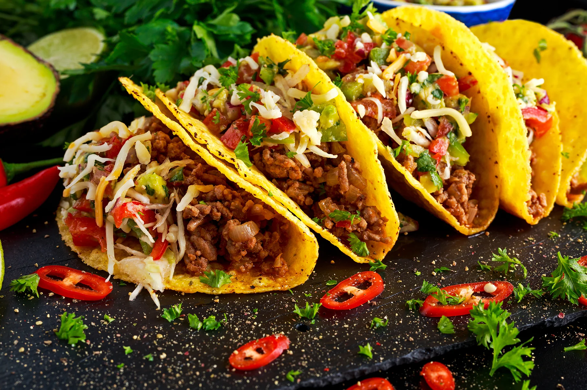

Oto najpopularniejsze alternatywy dla kebabów
Burito
Burrito to tradycyjna potrawa meksykańska, która składa się z dużej, cienkiej tortilli, wypełnionej różnorodnymi składnikami.
Typowe nadzienie obejmuje ryż, fasolę, mięso (najczęściej wołowinę, kurczaka lub wieprzowinę), ser, guacamole, śmietanę i salsę.
Burrito jest zwijane w formę walca, co sprawia, że jest łatwe do jedzenia na wynos. To danie jest popularne zarówno w Meksyku, jak i w Stanach Zjednoczonych,
gdzie często serwowane jest w stylu fast food..

Kuchnia Meksykańska w Gliwicach
Wrapy
Wrap to elastyczne danie, które może być przygotowane z różnych rodzajów chleba płaskiego, najczęściej tortilli. Wypełnione jest składnikami takimi jak
mięso (np. kurczak, wołowina), warzywa, sałaty, sosy i sery. Wrapy są bardzo uniwersalne, ponieważ można je łatwo dostosować do indywidualnych upodobań.
Zazwyczaj są składane w sposób, który umożliwia łatwe jedzenie w ruchu, co czyni je popularnym wyborem na lunch czy piknik.

Kuchnia Meksykańska w Gliwicach
Tacos
Tacos to kolejna klasyczna meksykańska potrawa, składająca się z małych, składanych tortilli, które można wypełnić różnorodnymi składnikami,
takimi jak mięso (np. wołowina, kurczak, ryba), warzywa, salsy, guacamole oraz serem. Tacos są zazwyczaj serwowane na ciepło i można je zjeść rękami.
Popularność tacos wzrosła na całym świecie, a ich różnorodność składników sprawia, że każdy może znaleźć coś dla siebie.
Kuchnia Meksykańska w Gliwicach

Pizza
Pizza to jedno z najbardziej znanych włoskich dań, składające się z okrągłego, cienkiego lub grubego ciasta pokrytego sosem pomidorowym,
serem mozzarella oraz różnymi dodatkami, takimi jak pepperoni, warzywa czy owoce morza. Pizzę piecze się w piecu, co nadaje jej charakterystyczny smak i teksturę.
Może być serwowana w kawałkach lub w całości, a jej wszechstronność sprawia, że jest uwielbiana na całym świecie.
Pizzeria w Gliwicach
 Powrót na główną stronę
Powrót na główną stronę